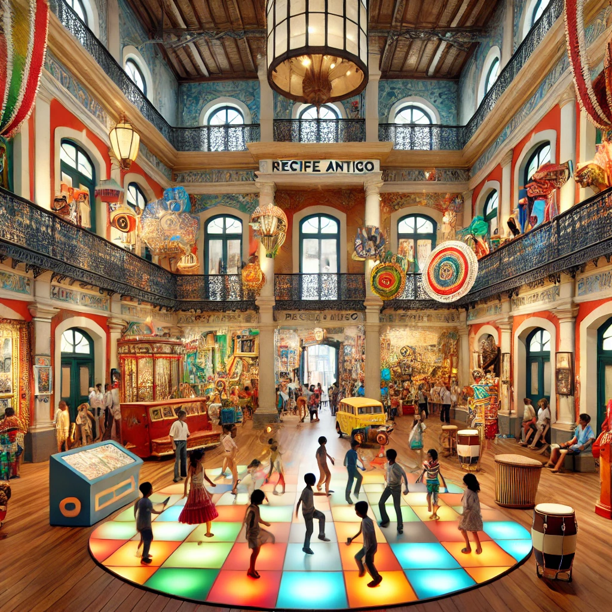
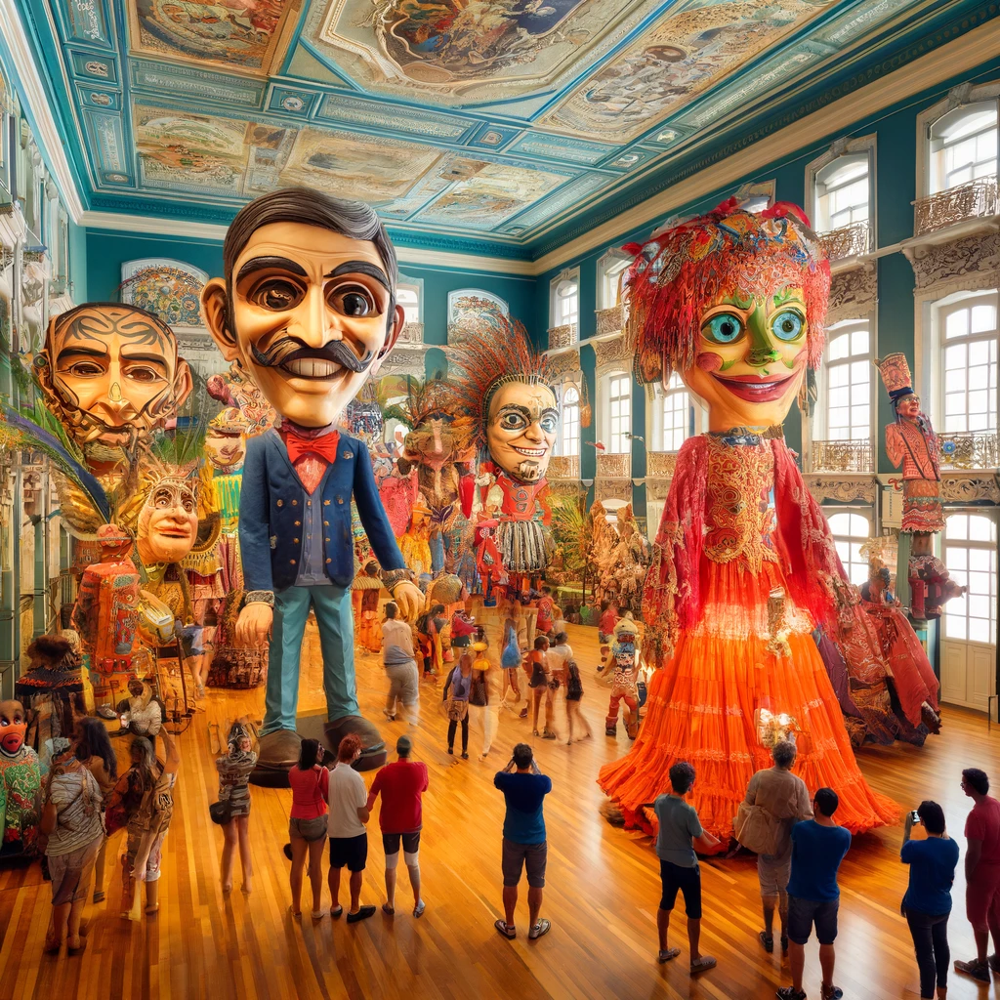

O Paço do Frevo
O Paço do Frevo é um espaço cultural dedicado à preservação, pesquisa, transmissão e valorização do frevo, um dos gêneros musicais e de dança mais representativos de Pernambuco. Localizado em um edifício histórico restaurado, o Paço oferece exposições interativas, aulas de dança, oficinas e apresentações ao vivo. É um lugar vibrante onde os visitantes podem mergulhar na história e na energia do frevo.
Embaixada dos Bonecos Gigantes
A Embaixada dos Bonecos Gigantes é um museu que exibe bonecos gigantes usados nas festividades de carnaval em Recife. Estes bonecos são uma tradição cultural do carnaval pernambucano, representando figuras populares e personagens famosos. O museu oferece uma oportunidade única para os visitantes conhecerem de perto essa arte popular, tirarem fotos com os bonecos e aprenderem sobre a história e o processo de criação desses icônicos símbolos carnavalescos.